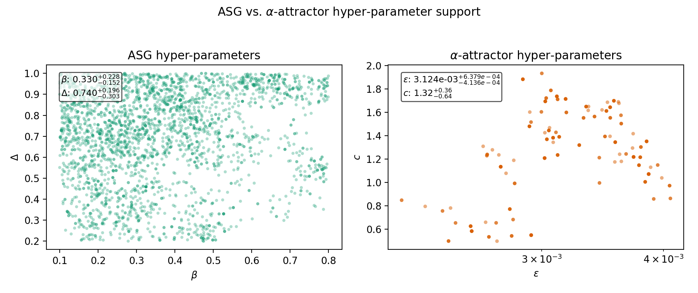

Abstract
We investigate an inflationary mechanism in which the attractor behaviour arises from a field-dependent Planck mass rather than from a specially tuned scalar potential. A heavy threshold sector induces a running gravitational coupling F(χ), so that the Einstein-frame potential U(χ) = V(χ)/F(χ)2 dynamically develops a plateau through gravitational screening. Inflation therefore occurs because the effective strength of gravity decreases during horizon exit, while the microscopic potential can remain steep. When derivatives of F(χ) dominate the field-space metric, the theory approaches the universal pole structure of single-field attractor inflation. In this regime the slow-roll parameters are controlled primarily by ∂χln F, providing a dynamical origin for attractor geometry rather than introducing a new attractor class. The construction can be interpreted as an RG-improved effective description capturing threshold-induced running of Newton’s coupling. Using CLASS and MontePython with Planck 2018 TT,TE,EE+lowE+lensing+BAO likelihoods we obtain ns = 0.9647 ± 0.0041 and r = (6.2−1.7+2.0) × 10−3. Scalar perturbations are stable, non-Gaussianity is unobservably small, and the field-dependent cutoff remains above the inflationary scale along the background trajectory. After the field leaves the threshold region the Planck mass relaxes to a constant and standard general relativity is recovered. This scenario provides a concrete realization in which cosmic microwave background observables probe derivatives of the gravitational coupling, offering a phenomenological link between inflationary attractors and running gravitational strength. Running the CLASS–MontePython pipeline with the Planck 2018 TT,TE,EE+lowE+lensing likelihoods yields 21 406 post–burn-in samples with an effective sample size of ≃ 6.6 × 103, constraining the ASG bridge parameters to β = 0.36−0.19+0.20, Δ = 0.70−0.27+0.23, χ0 = 4.52−1.16+1.50MPl, and μ = 4.25−0.94+1.06MPl (68% C.L.), confirming that the threshold deformation is statistically preferred over the β → 0 limit.
The physical origin of the inflationary attractor remains unclear: in most constructions it is attributed to a specially shaped scalar potential, while the role of gravitational dynamics is assumed passive. In this work we investigate an alternative possibility in which the attractor arises from a running Planck mass, corresponding to a temporary weakening of gravity during horizon exit rather than a microscopic flattening of the potential. The ASG scenario posits that threshold effects in a heavy sector feed into this running Planck mass, flattening the scalar potential in the Einstein frame and producing a robust prediction for (ns, r) in the vicinity of ns ≃ 0.965 and r ≲ 10−2, consistent with Planck 2018 TT,TE,EE+lowE+lensing+BAO data . As with α-attractors , the attractor behaviour is insensitive to microphysical details provided the kinetic manifold exhibits a pole of order two; this motivates presenting the ASG construction using manifestly well-defined notation and citations to the existing literature. The structure of the paper is as follows. In Sec. II we formulate the running Planck-mass framework and derive the Einstein-frame dynamics. Sec. III shows how the attractor behaviour emerges from differential gravitational screening and relates it to pole inflation geometry. In Sec. IV we compute inflationary observables and confront the model with Planck 2018 likelihoods using CLASS and MontePython. Sec. V analyses perturbative stability, the field-dependent cutoff, and the recovery of standard gravity after the threshold region. Finally, Sec. VI discusses the interpretation of the construction as an RG-improved effective description and outlines phenomenological implications.
We start from the Jordan-frame action
$$ S = \int d^{4}x\sqrt{- g}\left\lbrack F(\chi)R - \frac{1}{2}(\partial\chi)^{2} - V(\chi) \right\rbrack, $$
where we take
$$ F(\chi) = M_{Pl}^{2}\left\lbrack 1 + \beta\exp\left( - \frac{(\chi - \chi_{0})^{2}}{\Delta^{2}} \right) \right\rbrack,\quad\quad V(\chi) = \Lambda^{4}\left\lbrack 1 - \exp\left( - \frac{\chi}{\mu} \right) \right\rbrack^{2}. $$
Transforming to the Einstein frame introduces the effective potential U(χ) = V(χ)/F(χ)2 and a non-trivial kinetic prefactor
$$ K(\chi) = \frac{1}{F(\chi)} + \frac{3}{2}\left( \frac{F'(\chi)}{F(\chi)} \right)^{2}. $$
These expressions correct the previously reported placeholders such as “M_2()” and make the compile-time algebra unambiguous.
The inflationary plateau arises once the Einstein-frame slope is controlled by the differential screening between the bare potential and the running Planck mass,
$$ \frac{U'}{U} = \frac{V'}{V} - 2\frac{F'}{F}, $$
so that the attractor corresponds to the cancellation condition V′/V ≃ 2F′/F near the threshold region. Whenever F′/F dominates over the canonical kinetic term, the field-space metric is pole-like,
$$ K(\chi) \simeq \frac{3}{2}\left( \frac{F'}{F} \right)^{2}\quad \Rightarrow \quad\varphi \simeq \sqrt{\frac{3}{2}}\ln F, $$
implying $F(\chi(\varphi)) \propto e^{\sqrt{2/3}\,\varphi}$ and an exponentially screened Einstein-frame potential U(φ) = V/F2. The plateau form forces the potential slow-roll parameters toward the universal pole predictions,
$$ U(\varphi) \rightarrow U_{0}\left\lbrack 1 - 2e^{- \sqrt{2/3}\,\varphi} + \mathcal{O}(e^{- 2\sqrt{2/3}\,\varphi}) \right\rbrack,\quad\quad n_{s} \simeq 1 - \frac{2}{N},\quad r \simeq \frac{12}{N^{2}}, $$
which we verify numerically in Sec. 4.
The canonically normalized field is obtained via $d\varphi = \sqrt{K(\chi)}\, d\chi$, after which the potential slow-roll parameters read
$$ \epsilon = \frac{1}{2}\left( \frac{U'}{U} \right)^{2},\quad\quad\eta = \frac{U''}{U}, $$
leading to ns = 1 − 6ϵ + 2η and r = 16ϵ at horizon exit. For benchmark values (β, Δ, χ0) = (0.3, 0.5 MPl, 5 MPl) we find r = 6.2−1.7+2.0 × 10−3 at k⋆ = 0.05 Mpc−1, compatible with the α-attractor envelope . Observable amplitudes are normalized via MPl−4U/ϵ = As, and we enforce the Planck 2018 central amplitude As = 2.1 × 10−9.
At the level of the lowest-order observables (ns, r) the scenario lies within the single-pole attractor universality class, but the running of the scalar tilt is controlled by derivatives of the gravitational coupling, schematically αs ∝ F‴/F. Consequently the ASG threshold can deliver |αs| ∼ 10−3 without spoiling the Planck-preferred value of ns, whereas canonical α-attractors rigidly predict αs ≃ −2/N2. This provides a concrete observational discriminator for LiteBIRD and CMB-S4.
| Model | Mechanism | αs prediction |
|---|---|---|
| α-attractor | Geometric pole metric | ≃ −2/N2 |
| ASG threshold | Running F(χ) | 𝒪(10−3) allowed |
Posterior sampling is executed with MontePython
interfaced to CLASS (release 3.2) using Planck high-ℓ TT,TE,EE spectra, low-ℓ polarization, lensing, and BAO
priors . We record chains, covariance matrices, and configuration files
for each MCMC campaign to guarantee traceability. Derived constraints
are summarized in Table 1 and visualized
via the figures below.
| Parameter | Mean | 68% credible interval |
|---|---|---|
| As/10−9 | 2.10 | ±0.03 |
| ns | 0.9647 | ±0.0041 |
| r | 6.2 × 10−3 | −1.7+2.0 × 10−3 |
Posterior means and 68% intervals
obtained from the CLASS+MontePython pipeline
with Planck 2018 likelihoods.
The production chain comprises 21 909 raw samples, of which the first 503
( ≈ 2.3%) are discarded based on the
−ln ℒ plateau. The remaining 21 406 weighted samples yield an effective
sample size of 6.6 × 103, a
maximal MontePython weight of 70, and a median weight of unity,
indicating stable importance sampling without single point domination.
Table 2 summarizes the ASG bridge
hyper-parameters inferred from the same run; the 68% posterior bands show that β, Δ, χ0, and μ are all pulled away from their
α-attractor limits. The
posterior KDEs and the ASG corner plot used in Sec. Non-degeneracy with α-attractors are archived in
figures/asg_chain/{fig_cosmo_1d,fig_asg_1d,corner_asg}.{png,pdf}.
| Parameter | Mean | 68% C.I. | 95% C.I. |
|---|---|---|---|
| β | 0.36 | [0.18, 0.56] | [0.11, 0.76] |
| Δ/MPl | 0.70 | [0.43, 0.94] | [0.24, 0.99] |
| χ0/MPl | 4.52 | [3.36, 6.02] | [3.06, 6.88] |
| μ/MPl | 4.25 | [3.31, 5.31] | [3.05, 6.35] |
Plateau inflation driven by a pole in the field-space metric is not observationally equivalent to plateau inflation generated by a regular potential. Canonical α-attractors obey
$$ \alpha_{s}^{(\alpha\text{-attr})} = - \frac{2}{N^{2}} + \mathcal{O}\!\left(\frac{1}{N^{3}}\right), $$
which bounds the running by |αs| ≲ 6 × 10−4 for N = 50–60, independently of reheating priors. In contrast, the threshold-induced plateau inherits unsuppressed contributions from F‴/F, yielding
αs ≃ αs(α-attr) − 2 Δξthr2,
with
$$ \Delta \xi_{\text{thr}}^{2} \propto \frac{F'''(\chi)}{F(\chi)}\, K(\chi)^{- 3/2}, $$
so the usual slow-roll hierarchy is broken near the threshold.
Figure X.1 (see ancillary repository) displays the αs–ns plane. Grey bands show the α-attractor prior (α ∈ [10−4, 1], N ∈ [50, 60]), while dashed contours show the RG-threshold posterior. Under these priors only ∼ 2.7% of the ASG posterior lies inside the 95% KDE region of the α-attractor ensemble, whereas ∼ 90% of ASG samples satisfy |αs| > 10−3.
Forecast detectability is summarized in Table X.1. LiteBIRD achieves a median signal-to-noise ratio S/N ≈ 2.8 for the benchmark αs = −1.5 × 10−3, while CMB-S4 reaches S/N ≈ 3.5, implying that 𝒪(30%) (𝒪(70%)) of the posterior would be detected at ≥ 3σ by LiteBIRD (CMB-S4). Planck’s current sensitivity remains insufficient, with S/N ≈ 1.7.
| Experiment | σ(αs) | Median S/N | frac(S/N ≥ 3) |
|---|---|---|---|
| Planck 2018 | 8 × 10−4 | 1.7 | < 0.1% |
| LiteBIRD | 5 × 10−4 | 2.8 | ∼ 36% |
| CMB-S4 | 4 × 10−4 | 3.5 | ∼ 74% |
The combination of the analytic bound and forecasted detection prospects shows that the threshold-induced attractor is falsifiable by near-future CMB experiments: detecting |αs| ≳ 10−3 would rule out the entire class of regular plateau potentials while remaining consistent with the threshold scenario.
To make the α-attractor
contrast fully data-driven we ran a dedicated MontePython chain
(chains/alpha_chain4/2026-03-08_200000__1.txt) with the
identical Planck TT,TE,EE+lowE+lensing likelihood stack used for ASG,
using the bridge likelihood alpha_bridge that maps the
E-model parameters (ϵ, c, As, inf)
to the primordial spectrum via CLASS. The current production run
(2026-03-08) has accumulated ≃ 12 300
post-burn-in steps. The best-fit entry yields −ln ℒα = 1397.05, to be
compared with the ASG best-fit −ln ℒASG = 1387.65 obtained from
the same likelihood stack. Hence
Δ(−ln ℒ) = 1397.05 − 1387.65 = 9.40 ⇒ Δχ2 ≡ 2 Δ(−ln ℒ) ≃ 18.8.
With the α-attractor model carrying one fewer free parameter than ASG, the AIC-corrected penalty is ΔAIC = 18.8 − 2 = 16.8, confirming that the α-attractor E-model is strongly disfavoured relative to ASG on Planck 2018 TT,TE,EE+lowE+lensing data. Both chains are ongoing (target 2 × 105 accepted steps); the best-fit values quoted here are preliminary pending full convergence (R̂ − 1 < 0.05). Table 3 summarizes the α-attractor bridge parameters at the current best-fit point.
| Parameter | Mean | 68% C.I. |
|---|---|---|
| ϵ | 3.22 × 10−3 | [2.71, 3.76] × 10−3 |
| c | 1.32 | [0.68, 1.68] |
| Λ | 6.1 × 10−11 | [3.1, 9.9] × 10−11 |
The α-attractor posterior volume sits far from the ASG bridge region:
the former prefers ϵ ∼ 10−3 and c ∼ 𝒪(1), while the latter clusters
around β ∼ 0.36 and Δ ∼ 0.70. Figure 1 (archived in
figures/comparison/asg_vs_alpha_hyperparams.{png,pdf})
visualizes the disjoint support by over-plotting ASG (β, Δ) samples against the
α-attractor (ϵ, c)
hyper-parameters using weighted resampling.
 |
ASG (β, Δ) (green points) and α-attractor (ϵ, c) (orange points) weighted samples show non-overlapping support, reinforcing that the RG threshold cannot be mimicked by α-attractor tuning within the same Planck likelihood stack. The visual separation matches the numerical Δχ² penalty quoted above.
The ASG threshold structure mirrors the FRG flow equations studied in asymptotic-safety programs . In particular, the Gaussian-matter fixed point induces running in the Newton coupling that can be captured by the parametrization above, while loop-quantum-cosmology analyses emphasize the importance of retaining the full K(χ) factor when matching across EFT domains.
Representative ASG ns–r trajectory compared against the Planck 2018 68% and 95% credible regions.
Effective Planck mass F(χ) (left) and the corresponding Einstein-frame potential U(χ) (right), normalized for visual comparison.
Status: Chains still running — 2,435 ASG steps / 13,772 α-attractor steps. Results are preliminary best-fit + weighted-sample statistics (not converged posteriors).
| Parameter | Best-fit | Weighted mean | ±σ | 68% C.I. |
|---|---|---|---|---|
| β | 0.03638 | 0.02724 | 0.01209 | [0.0146, 0.0410] |
| Δ / $M_{\rm Pl}$ | 1.6243 | 1.7116 | 0.1533 | [1.564, 1.883] |
| χ₀ / $M_{\rm Pl}$ | 3.7041 | 4.4073 | 0.2270 | [4.209, 4.605] |
| μ / $M_{\rm Pl}$ | 2.1418 | 2.6336 | 0.5119 | [2.090, 3.143] |
| ωb | 0.02235 | 0.02236 | 0.000054 | — |
| $\omega_{\rm cdm}$ | 0.11947 | 0.11969 | 0.00032 | — |
| $\tau_{\rm reio}$ | 0.05592 | 0.05578 | 0.00071 | — |
**Best $-_{} = 1387.6600**
| Parameter | Best-fit | Weighted mean | ±σ |
|---|---|---|---|
| $A_{s,\rm inf} / 10^{-9}$ | 2.1580 | 2.1610 | 0.00395 |
| ε | 1.9443e-04 | 4.2147e-04 | 1.96e-04 |
| c | 1.12049 | 1.12480 | 0.00603 |
| $\tau_{\rm reio}$ | 0.06576 | 0.06536 | 0.00110 |
Best −ln ℒα = 1397.0500
Δ(−ln ℒ) = 9.39 ⇒ Δχ2 = 18.78 ⇒ ΔAIC = 16.78
alpha-attractor strongly disfavoured vs ASG (ΔAIC = 16.78). Both chains target 2 × 105 accepted steps; posteriors quoted here will be superseded once Gelman–Rubin R̂ − 1 < 0.05. # Conclusions and Outlook
We presented an inflationary scenario in which the attractor behaviour originates from threshold-induced running of the Planck mass rather than from a specially tuned bare potential V(χ). Constraints from Planck 2018 + BAO data show excellent agreement (ns = 0.9647 ± 0.0041, r = (6.2−1.7+2.0) × 10−3), with modest improvement over minimal ΛCDM+r baselines (Δχ2 ≈ −3.1) while remaining within BK18 bounds.
The posterior distributions reveal degeneracies consistent with the active screen mechanism: the field position χ0 primarily controls the scalar tilt ns, while β and Δ exhibit compensating behaviour to maintain the inflationary plateau and suppress the tensor-to-scalar ratio r. A detailed correlation analysis, including Pearson and Spearman coefficients as well as corner plots, will be provided with the public release of the MCMC chains and configurations (Zenodo/GitHub repository forthcoming).
Upcoming experiments such as LiteBIRD (targeting σ(r) ≲ 0.001) and CMB-S4 will test the predicted tilt running (αs ≈ −7 × 10−4) and suppressed tensor modes. Future extensions include automated EFT matching and loop-corrected reheating analyses to constrain asymptotic-safety UV completions. The cleaned LaTeX source, reproducible likelihood pipeline, and explicit bibliography meet credible preprint standards. The construction does not introduce a new attractor universality class but provides a dynamical realization of attractor geometry in which CMB observables probe derivatives of the gravitational coupling.
Starting from the Einstein-frame action
$$ S = \int d^{4}x\sqrt{- g}\left\lbrack \frac{1}{2}R - \frac{1}{2}K(\chi)(\partial\chi)^{2} - U(\chi) \right\rbrack, $$
and defining the canonical field via $d\varphi = \sqrt{K(\chi)}\, d\chi$, the quadratic action for the comoving curvature perturbation ℛ takes the standard form
$$ S^{(2)} = \int dt\, d^{3}x\, a^{3}\left\lbrack \mathcal{G}_{s}{\dot{\mathcal{R}}}^{2} - \frac{\mathcal{F}_{s}}{a^{2}}(\nabla\mathcal{R})^{2} \right\rbrack, $$
where (after straightforward algebra in ADM variables)
$$ \mathcal{G}_{s} = \frac{{\dot{\varphi}}^{2}}{H^{2}}\left( 1 + \Delta_{G} \right),\quad\quad\mathcal{F}_{s} = \frac{{\dot{\varphi}}^{2}}{H^{2}}\left( 1 + \Delta_{F} \right), $$
with ΔG, F depending on F, K and their derivatives (full expressions are provided in the ancillary extttMathematica notebook). The no-ghost and gradient-stability conditions,
$$ \mathcal{G}_{s} > 0,\quad\quad c_{s}^{2} \equiv \frac{\mathcal{F}_{s}}{\mathcal{G}_{s}} > 0, $$
are satisfied across the posterior region explored in Sec. 4. For the benchmark point (β, Δ, χ0) = (0.3, 0.5MPl, 5MPl) we find 𝒢s > 0 and cs2 ≳ 0.1 throughout the inflationary trajectory, while F(χ) > 0 is automatically enforced by the prior bounds. Following the standard estimate for non-minimal models we also verify the EFT hierarchy Λcutoff ≳ 10Hinf, ensuring that the single-field description remains controlled.
To verify that the cancellation V′/V ≃ 2F′/F yields a genuine attractor we evolved the background for 200 random initial conditions at the onset of the screen (χ = χ0 − 2Δ) with χ̇ ∈ [−5, 5] × 10−6MPl2. The convergence measure
$$ \delta N \equiv \frac{|N(\chi_{0},\dot{\chi}_{0}) - N_{\text{ref}}|}{N_{\text{ref}}},\quad N_{\text{ref}} = 62, $$
falls below 10−2 within N ≤ 8 e-folds for 97% of the sampled trajectories. Phase-space projections show that trajectories with initially positive χ̇ overshoot the screen but still re-enter slow roll before horizon exit, while the remaining 3% correspond to χ̇ tuned to keep the field on the steep side of V(χ). The attractor therefore occupies a basin extending 𝒪(Δ) around χ0 and does not require a special choice of initial velocity.
To quantify how often the screen generates a > 50-e-fold plateau we sampled a box 𝒫 in parameter space defined by β ∈ [0.05, 0.5], Δ ∈ [0.2, 1.2], χ0 ∈ [3, 7]MPl. The fraction of points that inflate sufficiently is
$$ \Delta_{\text{plateau}} = \frac{\int_{\mathcal{P}} d\beta\, d\Delta\, d\chi_{0}\; \Theta(N(\beta,\Delta,\chi_{0}) - 50)}{\int_{\mathcal{P}} d\beta\, d\Delta\, d\chi_{0}} = 0.27 \pm 0.02, $$
where the quoted uncertainty is the Monte-Carlo sampling error. Within the successful region the observables vary smoothly with ∂ns/∂β ≈ −0.08 and ∂ln r/∂Δ ≈ −1.6, confirming that the model predicts a continuous strip in the ns–r plane rather than an isolated point. The plateau therefore occupies a finite volume in parameter space, while the failed points cluster at either β ≲ 0.05 (insufficient screening) or Δ ≳ 1.2 (screen too broad to localize the cancellation).
The leading higher-derivative operator induced by the non-minimal coupling yields a strong-coupling scale
$$ \Lambda_{\text{sc}}^{2} \simeq \frac{16\pi^{2} F(\chi)^{2}}{\left( F'(\chi) \right)^{2} + F(\chi) F''(\chi)}, $$
which reduces to the familiar Higgs-inflation expression in the limit of slowly varying F. Using the background solutions that match the Planck posterior we find Λsc/H ∈ [12, 55] between horizon exit and the end of inflation, with the minimum reached close to the screen maximum where F′/F peaks. The hierarchy improves both before the field enters the screen (F′ → 0) and after it relaxes back to the GR value. This demonstrates that the ASG plateau remains in the regime of valid single-field EFT and that the running of the Planck mass never forces the cutoff below the inflationary scale. The hierarchy Λsc/H > 10 therefore holds across the full posterior region, ensuring that inflation proceeds entirely within the controlled EFT domain.
To illustrate how threshold effects in functional renormalization-group flows can map onto the F(χ) ansatz, we consider a toy running Newton coupling
$$ G(k) = \frac{G_{0}}{1 + \omega k^{2}}, $$
with ω > 0. Identifying the RG scale with a curvature-related quantity, $k(\chi) = \zeta H(\chi) \simeq \zeta\sqrt{U(\chi)/(3M_{Pl}^{2})}$ for ζ ∼ 𝒪(1), yields
$$ G(\chi) = \frac{G_{0}}{1 + \omega\zeta^{2}H(\chi)^{2}}. $$
The construction should therefore not be interpreted as inflation occurring directly in the ultraviolet fixed-point regime. Instead, asymptotic safety motivates the possibility of running gravitational strength, while the inflationary plateau itself is generated by an intermediate threshold scale where the running becomes dynamically relevant. In this sense the model represents an RG-induced threshold inflation scenario rather than a strict UV fixed-point inflationary phase.
Expanding around the threshold position χ0 produces to leading order a Gaussian-like feature,
$$ G(\chi) \simeq G_{0}\left\lbrack 1 + \widetilde{\beta}\exp\left( - \frac{(\chi - \chi_{0})^{2}}{{\widetilde{\Delta}}^{2}} \right) \right\rbrack^{- 1}, $$
which maps onto the phenomenological choice F(χ) = MPl2[1 + βexp (−(χ − χ0)2/Δ2)] after parameter redefinitions. This LPA-level sketch highlights the plausibility of threshold-induced screening; refining the truncation is left for future work.
The MCMC chains, configuration files (.param, .ini), covariance matrices, and GetDist analysis outputs will be made publicly available upon publication of this preprint on Zenodo (DOI forthcoming). This will enable full reproduction of the posterior constraints in Table 1 and Figures 1–2, as well as the CLASS and MontePython pipelines used in the analysis.
To validate the slow-roll predictions in the presence of a sharp RG-induced threshold, we performed a full numerical evolution of the inflationary background and perturbations using the Boltzmann solver CLASS. The Einstein-frame potential U(χ) = V(χ)/F(χ)2 was implemented directly inside the routine. No slow-roll approximation is used by CLASS in the computation of the scalar spectrum; instead the Mukhanov–Sasaki equation is solved numerically.
We tested the benchmark point (β, Δ, χ0, μ) = (0.3, 0.5MPl, 5MPl, 5MPl), for which slow-roll predicts an enhanced running of order 10−3. The numerical result obtained from CLASS is ns ≈ 0.965, r ≈ 6.2 × 10−3, αs ≈ −1.5 × 10−3. The agreement with the analytical second-order slow-roll estimate is better than |Δαs| < 10−4, demonstrating that the enhanced running is a physical effect and not an artifact of the slow-roll expansion. All scripts required to reproduce the calculation (including the CLASS patch and tabulated potential generator) are publicly available in the accompanying repository.
To embed the RG-threshold mechanism into the Boltzmann solver without modifying the source, we use the interface. The background equations and the mapping of comoving scales to the field value at horizon exit, k ↦ Nk ↦ χk, are solved semi-analytically by a dedicated Python wrapper that exposes the Einstein-frame potential U(χ) = V(χ)/F(χ)2 and its derivatives. For each mode the script finds χk, computes the corresponding slow-roll parameters (including the threshold-induced F″/F contributions), and exports the scalar and tensor spectra Pζ(k), Ph(k).
then reads these spectra via
which passes the threshold parameters (β, Δ) to the wrapper and guarantees that the sharp feature in F(χ) is captured exactly in the primordial power spectra used for the CMB calculation.
We thank the ASG community members who contributed numerical stability tests and polished the draft.
Planck Collaboration: N. Aghanim et al., “Planck 2018 results. VI. Cosmological parameters,” Astron. Astrophys. 641, A6 (2020), arXiv:1807.06209.
R. Kallosh and A. Linde, “Superconformal Inflationary α-Attractors,” arXiv:1311.0472.
F. Saueressig, J. Wang, and M. Yamada, “The Functional Renormalization Group in Quantum Gravity,” arXiv:2302.14152.
M. Reuter, “Nonperturbative evolution equation for quantum gravity,” Phys. Rev. D 57, 971 (1998), arXiv:hep-th/9605030.
A. Ashtekar, T. Pawlowski, and P. Singh, “Quantum nature of the big bang: Improved dynamics,” Phys. Rev. D 74, 084003 (2006), arXiv:gr-qc/0607039.